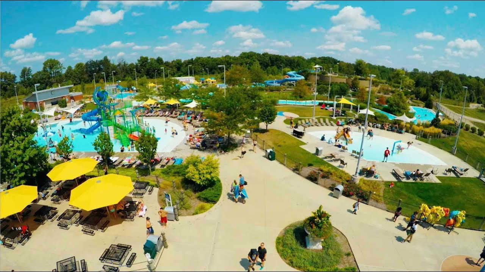
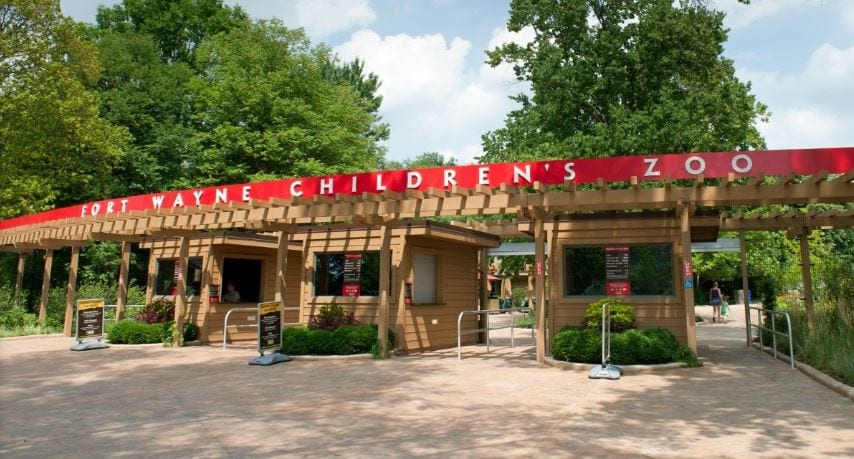
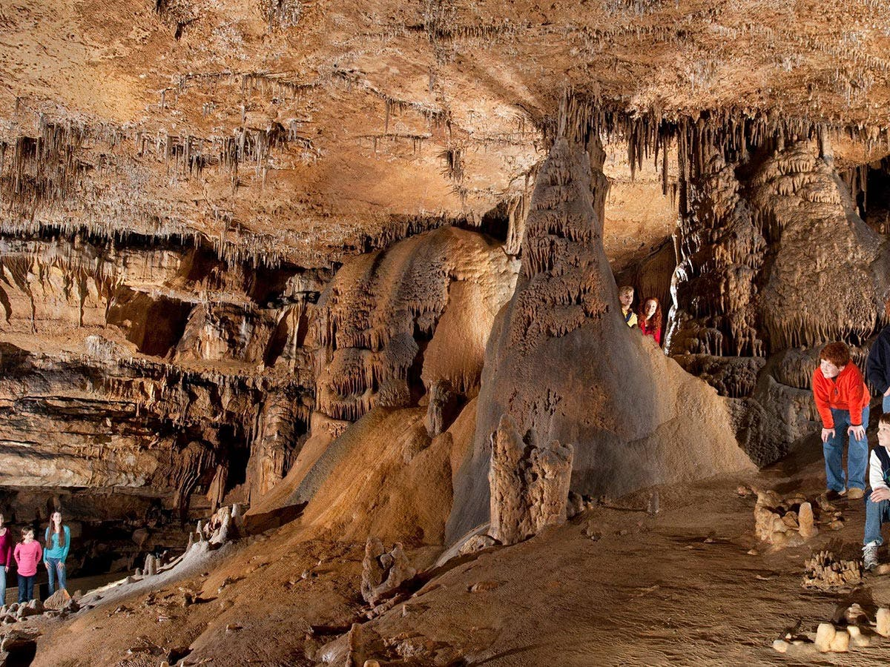

|
1195 Central Park Dr W, Carmel
317-848-7275
Open: May 24, The waterpark is expected to open on June 14.
Monon Community Center
The Monon Community Center will reopen on May 24 or when Hamilton County enters
Stage 3 of the state’s reopening plan, whichever is later.
Initially, the facility will only be open by reservation for
existing paid members age 15 and above. No new memberships or day passes will
be sold until after July 4. Fitness equipment has been spread throughout the west building,
including on the indoor track, and a limited schedule of group fitness classes
will be offered in the gymnasium, all to promote physical distancing between visitors.
Parks, Playgrounds, Splash Pads + Restrooms
Playgrounds, splash pads, and restrooms will open on May 24 in all CCPR parks and along
the Monon Greenway, consistent with the state’s guidelines. The skate park
and membership-based dog park, both located in Central Park, will also reopen
on this date. CCPR will work closely with the City of Carmel to determine the
appropriate time to reopen Midtown Plaza and the Monon Greenway between Main Street
and Gradle Drive, although this is not anticipated to occur before Memorial Day.
The Waterpark
The Waterpark is expected to open on June 14 at no greater than 50 percent capacity,
as required under the state’s reopening plan. Lounge chairs will not be provided by
CCPR this summer, but visitors are welcome to bring their own folding chairs.
Visitors are encouraged to bring credit cards to minimize the use of cash.
|

|
3411 Sherman Blvd, Fort Wayne
260-427-6800
Open: June 14 for members, July 4 for public
Timed tickets will be required for entry. Timed tickets for members only will expedite
entrance lines, encourage appropriate social distancing and allow the Zoo to follow
Governor Holcomb’s orders to operate at half capacity.
|

|
3411 Sherman Blvd, Fort Wayne
260-427-6800
Open: June 14 for members, July 4 for public
Timed tickets will be required for entry. Timed tickets for members only will expedite
entrance lines, encourage appropriate social distancing and allow the Zoo to follow
Governor Holcomb’s orders to operate at half capacity.
|